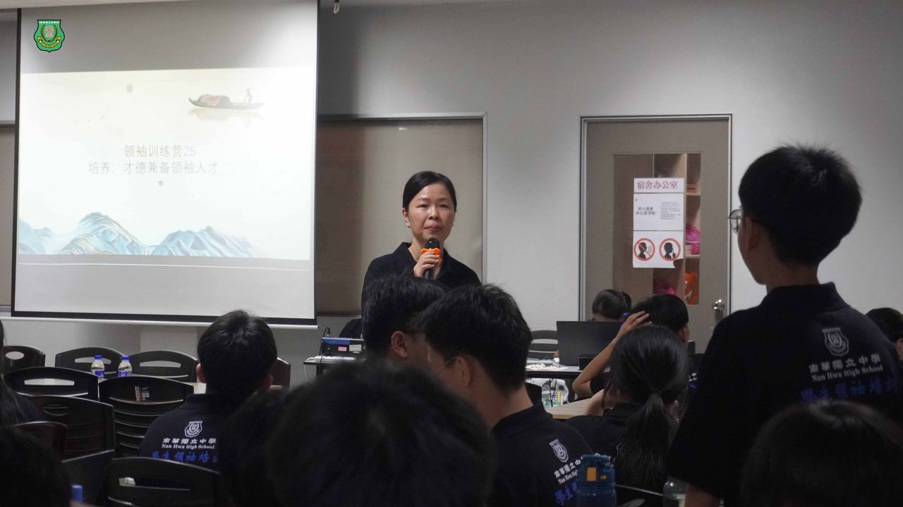
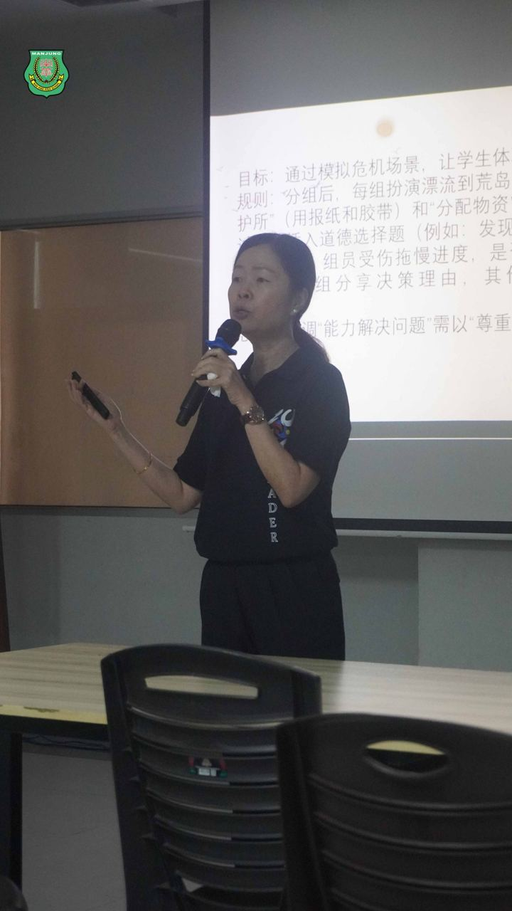
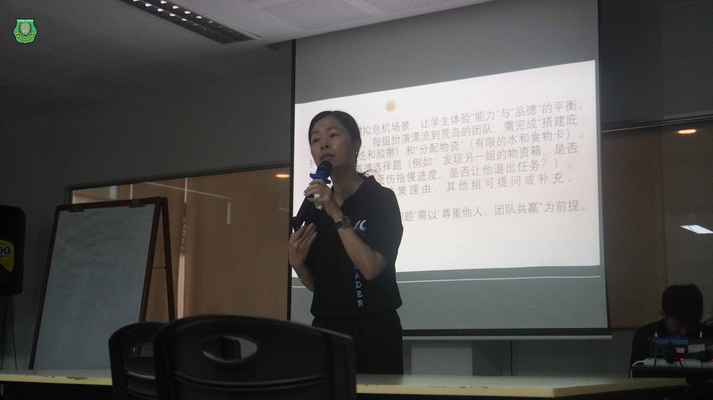
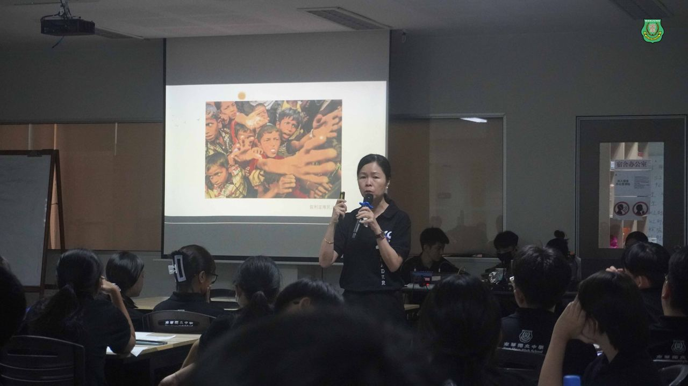
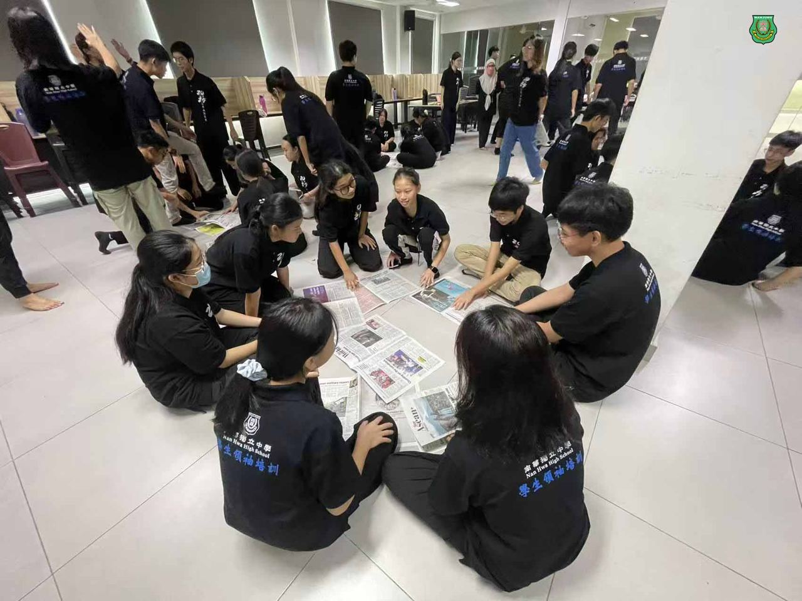
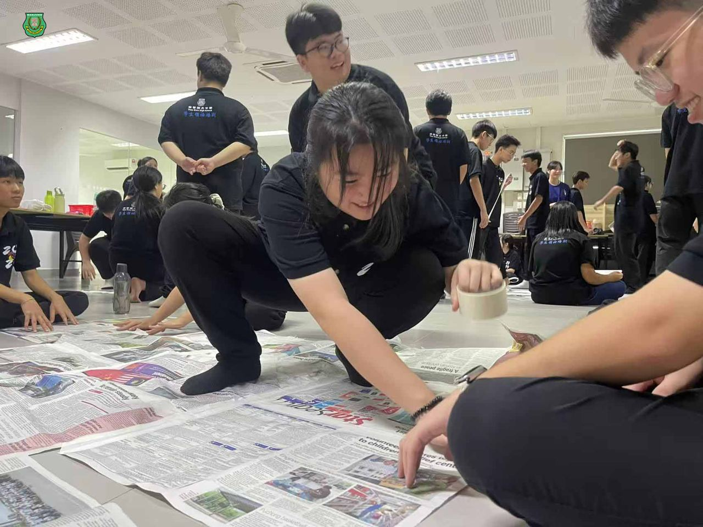
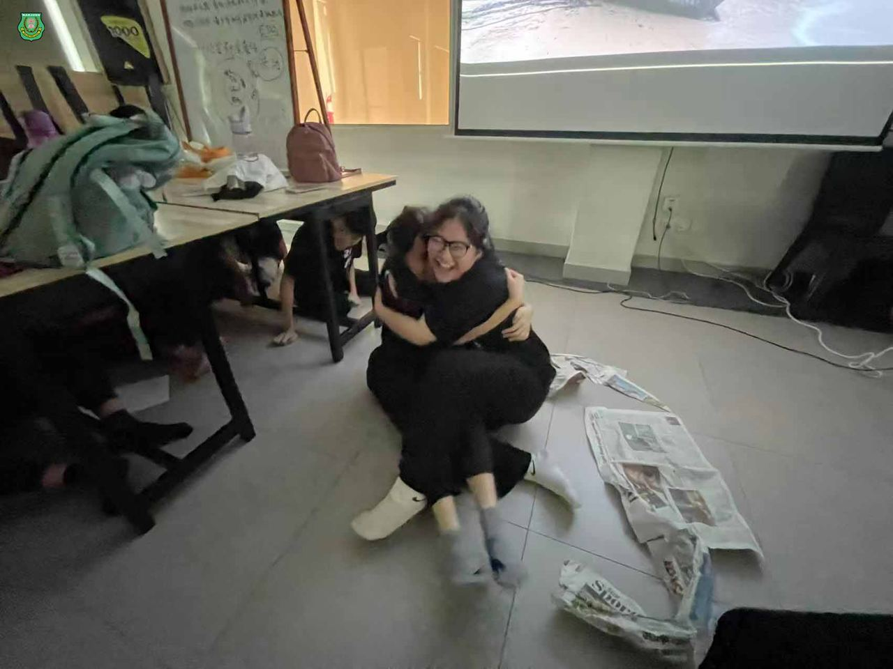
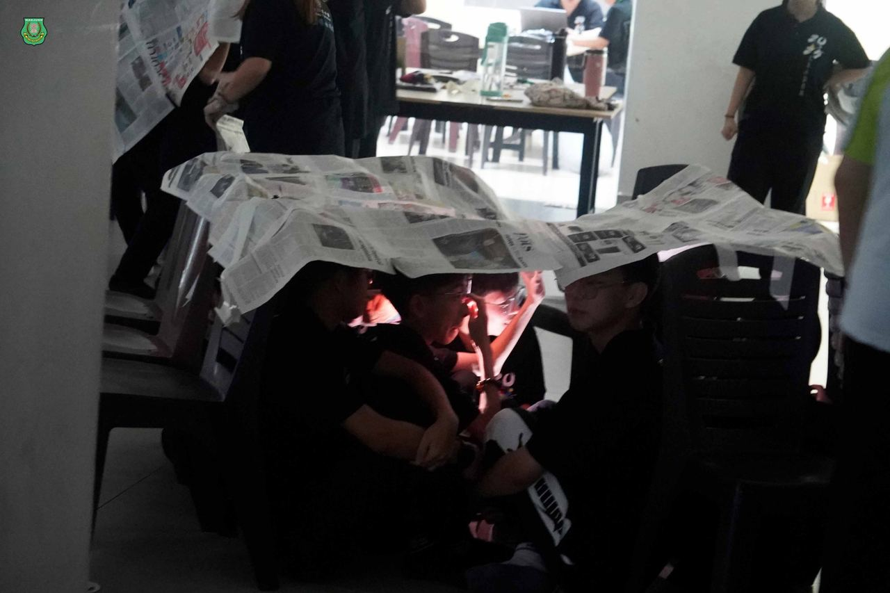

学生领袖培训系列报导之二
学生领袖培训系列报导之二
品格与能力的对谈
未来领袖领略“才德兼备”
南华学生领袖训练营迎来关键一课，由本校校长陈丽冰博士主讲的“#才德兼备”讲座，以沉稳却犀利的语言，提出了学生领袖最根本也最艰难的命题：
“德是否配位，决定灾殃是否随行！”
这不仅是一场讲座，更是一场思想实验，带领着未来学生领袖进行脑力碰撞。陈校长以一贯温和却坚定的立场，引领着学生进入“品格先行、能力为体”的领导力核心议题。
#德才辨析：不是优劣排序，而是相辅相成
开场引用司马光语：“冲察强义之谓才，正直忠和之谓德”，校长提醒大家：才，是解决问题的能力；德，是你选择如何去解决问题的初心。她引述牛根生用人标准“四象限”模型，提醒学生：“有才无德，是毒品。” “真正可用的人才，是品格撑得起才能的那一类。”
#情境模拟荒岛求生 ：生存压力下的道德困境选择题
陈校长特别设计了“荒岛生存”团队任务和“资源掠夺道德测试”，透过有限物资、竞争机制与诱惑陷阱，让学生在真实互动中面对内在抉择。例如：是否趁对手不备偷偷拿走他们的物资？是否牺牲受伤组员以争取胜利？是否接受“贿赂裁判”所带来的优势？
这些选择没有标准答案，却真实揭示了一个领袖在“压力之下”到底坚持什么、放弃什么。这项情境模拟实验，让未来领袖们及早体验了“才与德”的坚守与舍弃，让大家得以更广泛且深入地思考未来可能面对的道德困境。
从“#选谁上台”到“#如何面对没被选上者”
陈校长 在“道德想象力”环节中，引入哈佛学者努斯鲍姆的“能力理论”，并以分配访学名额的模拟情境，让学生亲身感受：在权力中做决定，不只是效率问题，更是价值判断。教育公平，不只是“谁得奖”，更在于“如何对待落选者”。“领导力的试金石，不是你如何对待掌声，而是你如何安顿失落。”
“#以德服人”，才是领导者最高的修炼
在讲座的最后，陈校长回到南华一贯的育人理念：“学会读书、学会做人”。她强调：“短期是做事，长期是做人。” “真正的领袖，是让别人安心跟随你，而不是畏惧你的能力。”这句警训深深留在每一位在场学生的心中。







